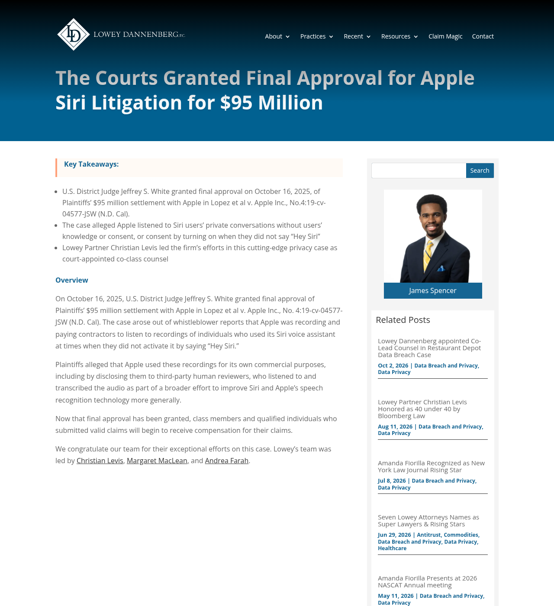
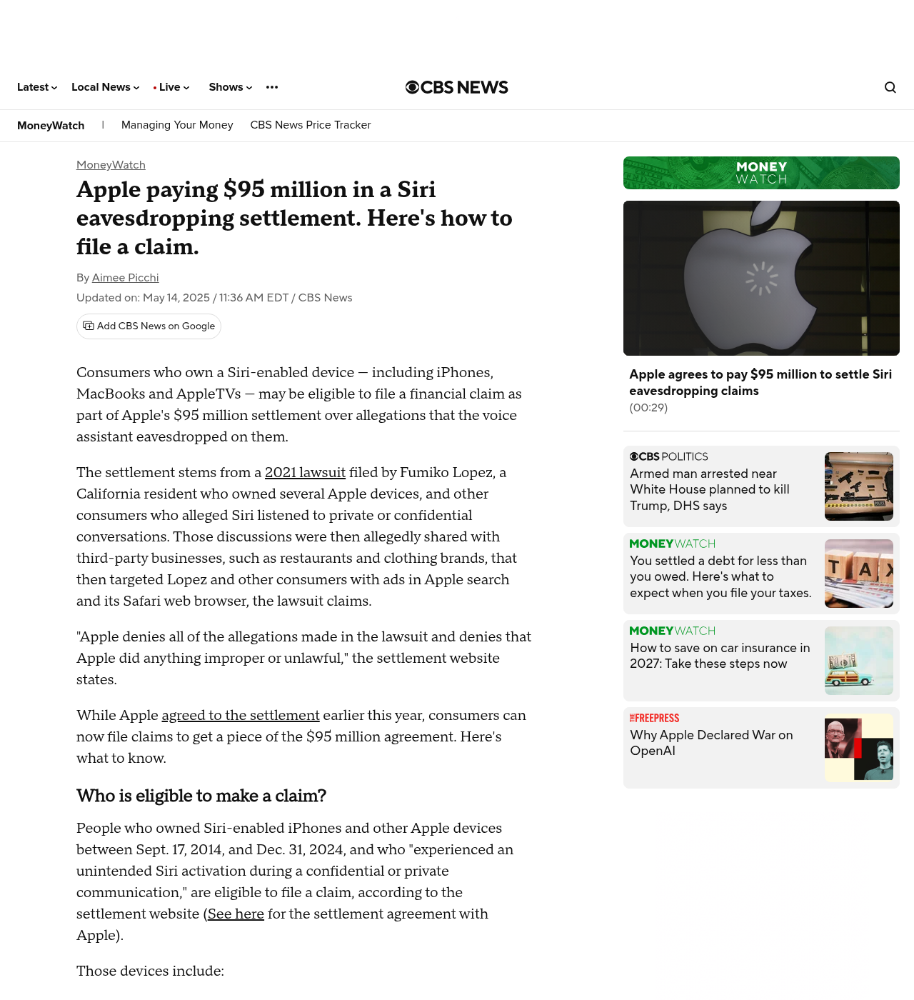
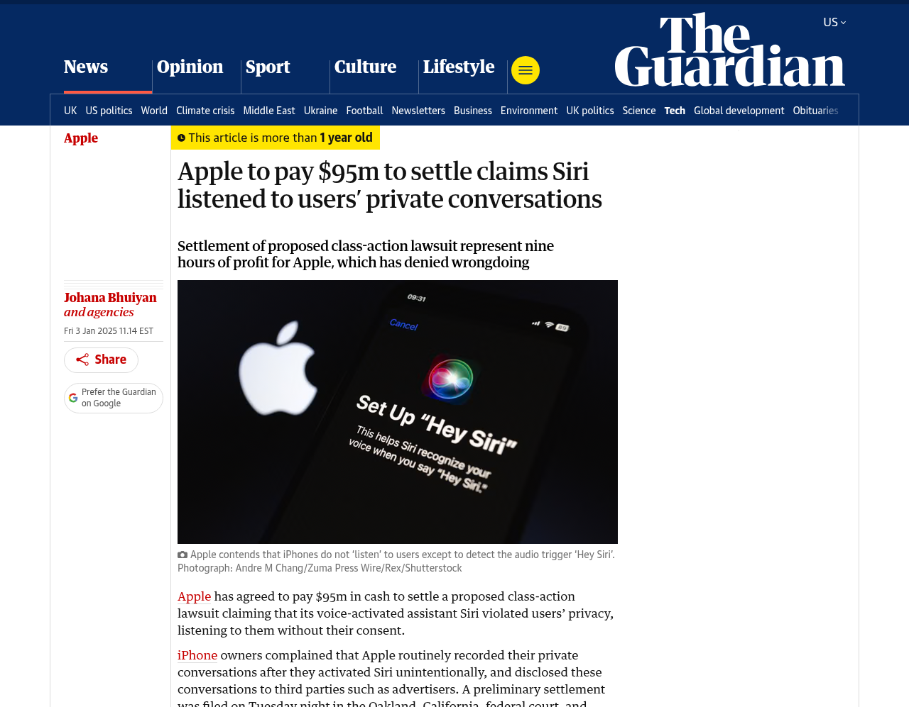

Apple's $95 Million Siri Settlement Equals 9 Hours of Profit
In Lopez v. Apple Inc., a federal judge granted final approval to a $95 million class-action settlement resolving allegations that unintended Siri activations recorded private conversations between 2014 and 2024. Apple denied wrongdoing, and claims are capped at up to $20 per device across five devices.
Final Approval on $95M Siri Deal
A federal judge granted final approval to Apple's 95 million dollar class settlement over unintended Siri voice recordings.

Source: Lopez v. Apple Inc., No. 4:19-cv-04577, Final Approval (N.D. Cal.)
Triggered Without Saying 'Hey Siri'
The lawsuit alleged Siri woke up accidentally during private talks and shared snippets that led to targeted ads and contractor review.

Source: CBS MoneyWatch Summary of Lopez v. Apple Claims (May 2025)
Roughly Nine Hours of Profit
Against Apple's 93.74 billion dollars in annual net income, that entire 95 million dollar fund equals roughly nine hours of profit.

Source: The Guardian Analysis of Apple FY2024 Net Income (Jan 2025)
Capped at $20 Per Siri Device
Apple denied all wrongdoing and settled without admitting fault, capping user payouts at up to 20 dollars per device for five devices.
Source: Lopez v. Apple Settlement Notice (2014-2024 Class Period)
Lock Settings, Don't Wait on Court
Class actions price a decade of privacy at 20 dollars. Audit your microphone and Siri analytics settings yourself today.
Source: Lopez v. Apple Inc., No. 4:19-cv-04577 (N.D. Cal.)
- Co-Lead Class Counsel Lowey Dannenberg: Final Approval in Lopez v. Apple ($95M): https://lowey.com/blog/the-courts-granted-final-approval-for-apple-siri-litigation-for-95-million/
- CBS MoneyWatch: Apple Paying $95M in Siri Eavesdropping Settlement: https://www.cbsnews.com/news/apple-siri-settlement-95-million-lopez-how-to-file-claim/
- The Guardian: Apple $95M Siri Settlement Represents Nine Hours of Profit: https://www.theguardian.com/technology/2025/jan/03/apple-siri-class-action-lawsuit-settlement
Free 5-Hour Asset Builder OS + reading list. Check current edition availability directly on Amazon or explore Audible audiobook options.
Check Availability on Amazon Listen Free on AudibleTopics: apple siri settlement, lopez v apple, siri privacy lawsuit, class action payout, tech privacy, apple news, consumer rights